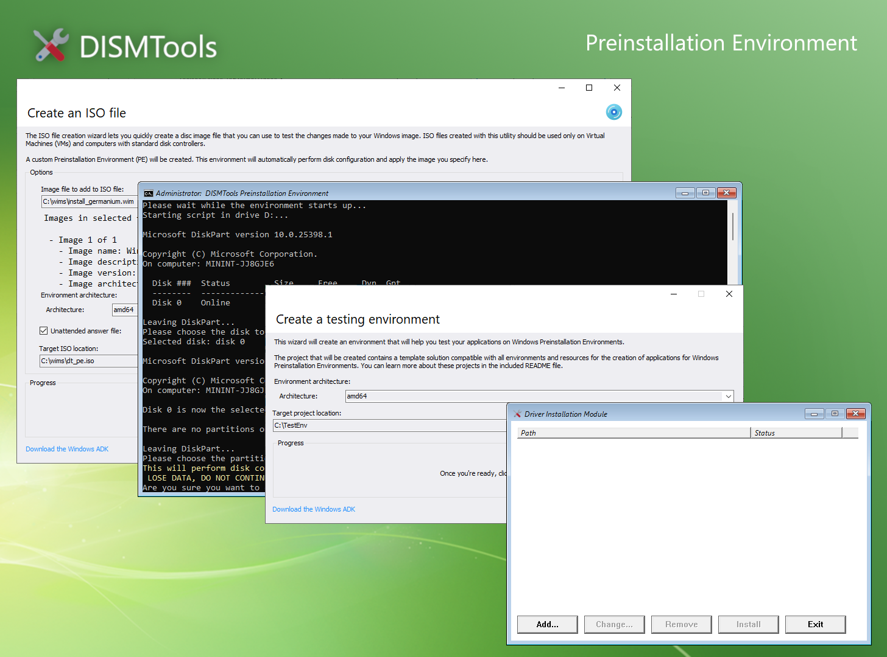
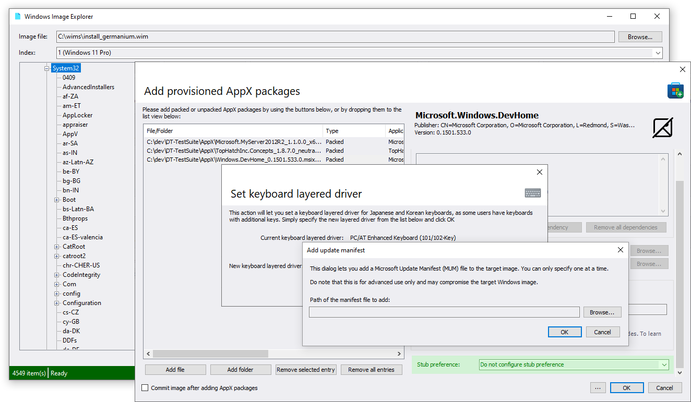
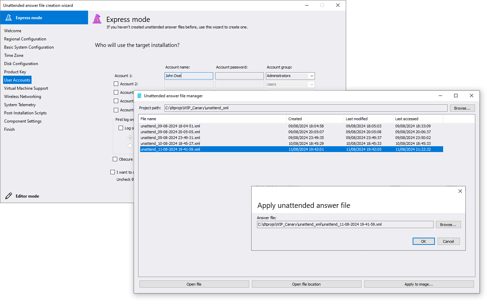

Release highlights
This new version of DISMTools comes with new features that enhance image management and servicing tasks. Here are some of its key changes.
If you want to take a look at everything that has changed though, check out the release notes page for more information.
Test your Windows images with more confidence
The ISO creation tools have seen several improvements with the addition of 2 new features. The Driver Installation Module lets you add drivers to Windows Preinstallation Environments to add support for devices that are not compatible by default, and the Extensibility Suite lets you perform further customizations to the DISMTools Preinstallation Environment to include your applications (either the ones that you have made or the ones that you find useful to include).

Task additions and improvements
DISMTools 0.5.1 comes with improvements to existing tasks and some newcomers. For example, you can now configure stub package preferences for AppX packages, so that you can either explicitly install the full version of an application, its stub version (meaning that the full application will be downloaded on first launch), or go with the defaults for the application package.
Also, you can now list the contents of Windows images (even the ones that haven't been mounted) with the Windows Image Explorer, which is also available as a standalone download.
Next, package addition has received the ability to add Microsoft Update Manifest (MUM) files. And, finally, you can now configure keyboard layered drivers for Japanese and Korean keyboards.

Learn more about:
- Stub package preferences
- Listing files of Windows images
- Microsoft Update Manifest files
- Setting keyboard layered drivers
Revamped unattended answer file features
The unattended answer file features have been significantly revamped, thanks to a new base powered by the unattended answer file generator from Christoph Schneegans. This includes a revamped creation wizard, a new manager, and a new task that lets you apply such files.
When creating your ISO files, you can also use your unattended answer file to test it. The Operating System installer will apply it for you.

Explore the new unattended answer file features
New translations
Ciao! We have travelled to a country with amazing places like Rome or Venice, with amazing food like spaghetti or ravioli, and with tourist attractions like the Colosseum or the leaning tower of Pisa.
Jokes aside, we have added Italian translations to this version, making it the fifth supported language.
Overall refinements
This release also focuses on refining existing tasks and functionality to improve the user experience. For example, you can now get a description of operation errors instead of generic instructions telling you to look at the error codes online. We have updated the dependencies of the program, simplified the logic of some tasks, and improved detection of Assessment and Deployment Kits as well.
Thanks to the contributors
The following people have helped shape this version of DISMTools by reporting issues or suggesting new features or changes:
- AnubyteCode for suggesting MUM package addition,
- drew84 for suggesting Christoph Schneegans' library for the unattended answer file features, and
- vadimlitvinenko87 for spotting video feed detector issues
If you want to appear in this list, you can report issues or suggestions in any channel you prefer (via the MDL forum thread, via the GitHub repository, or via any announcements on the DISMTools subreddit or on the Windows, Windows11 and Windows10 subreddits (as comments)) or submit new code changes (read the contribution guidelines for more information).